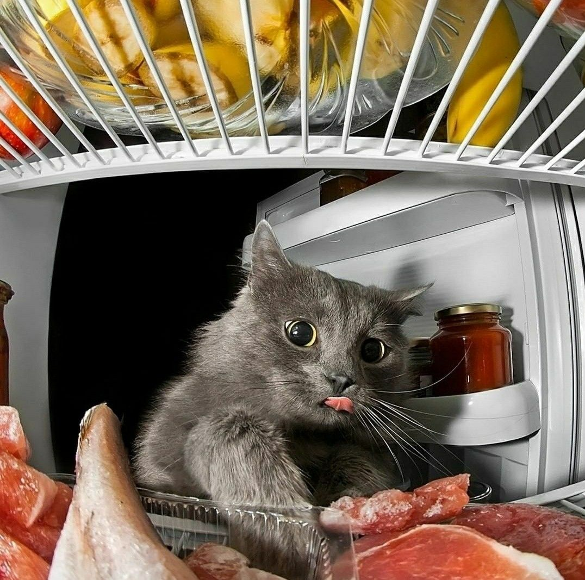
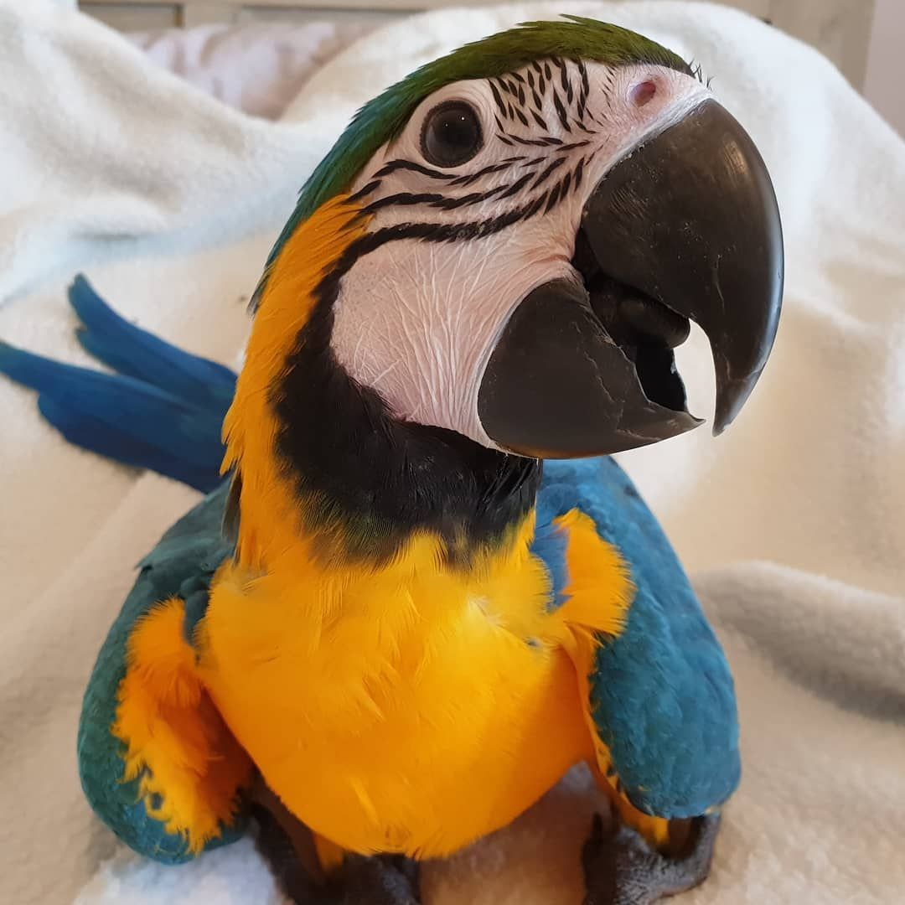
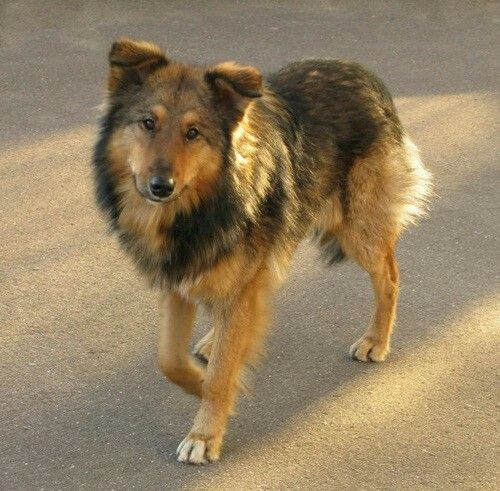
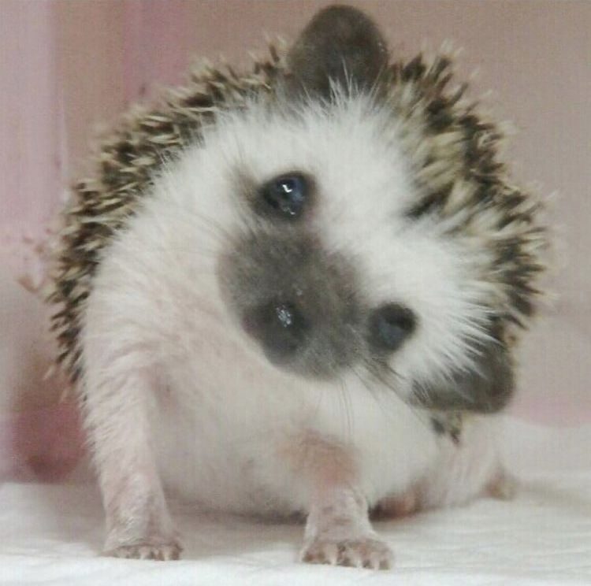
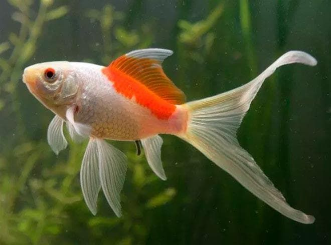

Забавные истории про наших любимых животных

Барсик — пушистый рыжий кот, который считает себя хозяином квартиры. Однажды он решил, что коробка из-под обуви — это его личный трон, и целый день никого к ней не подпускал. А вечером уснул прямо в ней, свесив хвост наружу.

Кеша — говорящий попугай. Он выучил фразу «Кто там?» и теперь повторяет её всякий раз, когда кто-то звонит в дверь. Соседи уже думают, что у нас в квартире живёт охранник, а не попугай.

Рекс — весёлый пёс породы лабрадор. Больше всего на свете он любит играть в мяч. Но однажды он так увлёкся, что принёс вместо мяча хозяйскую тапку — и был очень горд собой. Тапка, кстати, до сих пор считается его любимой игрушкой.

Ёж — маленький колючий житель сада. Каждую ночь он отправляется на поиски яблок и грибов. Однажды он притащил в норку целое яблоко, но оно оказалось больше его самого — и застряло в проходе. Пришлось звать на помощь весь ежиный род.

Гоша — важный гусь. Он ходит по двору, как настоящий генерал, и громко командует всеми остальными птицами. Куры его слушаются, утки — уважают, а петух просто держится подальше. Гоша считает, что двор — это его личное государство.